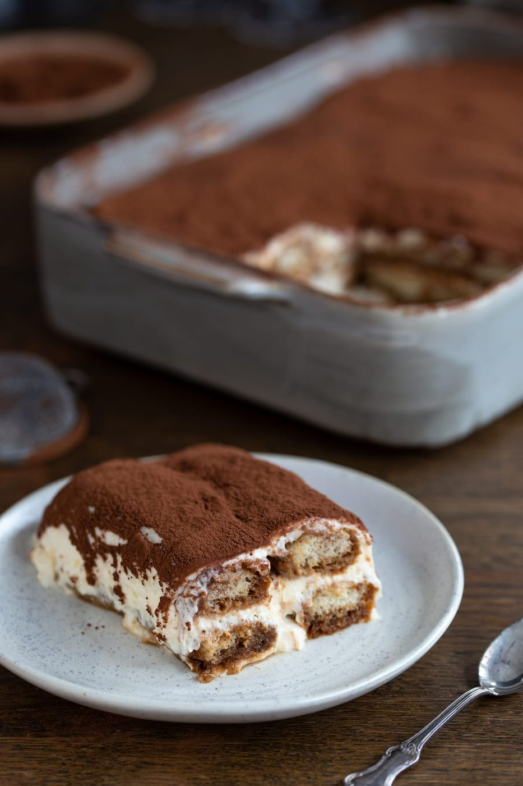
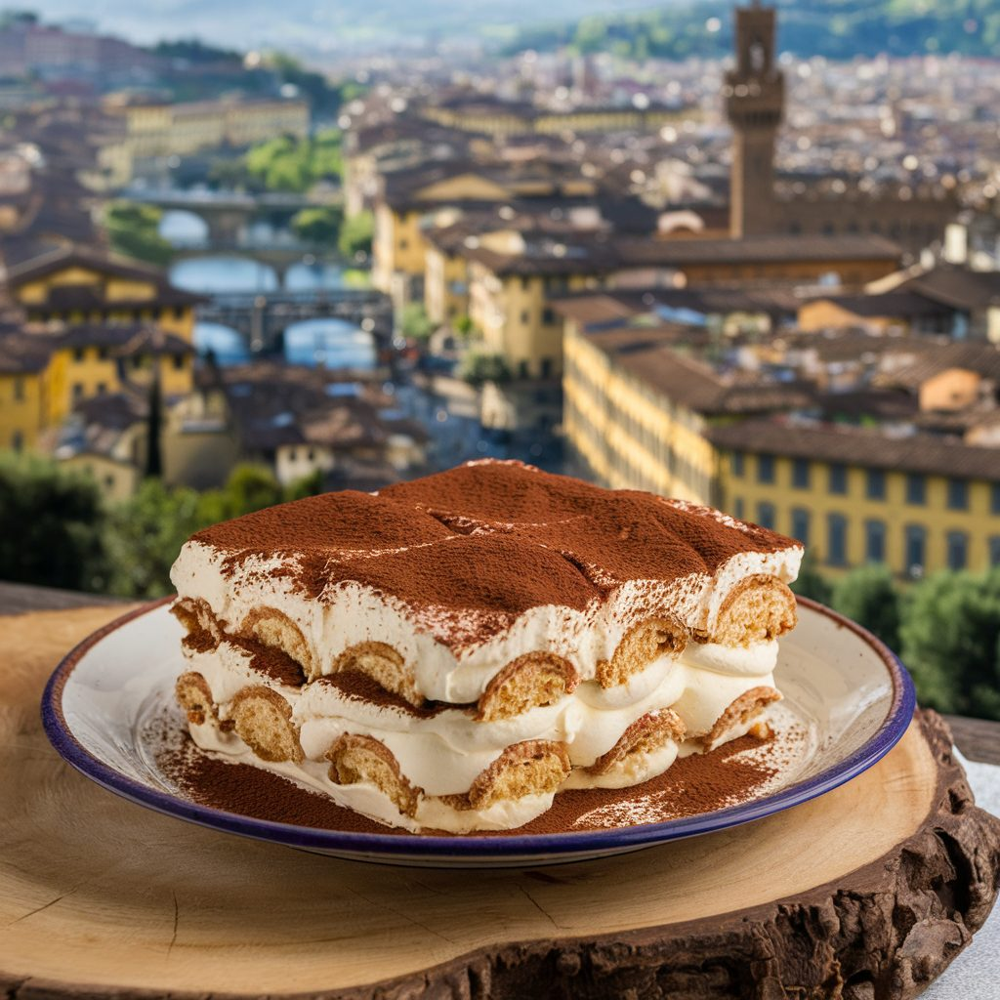
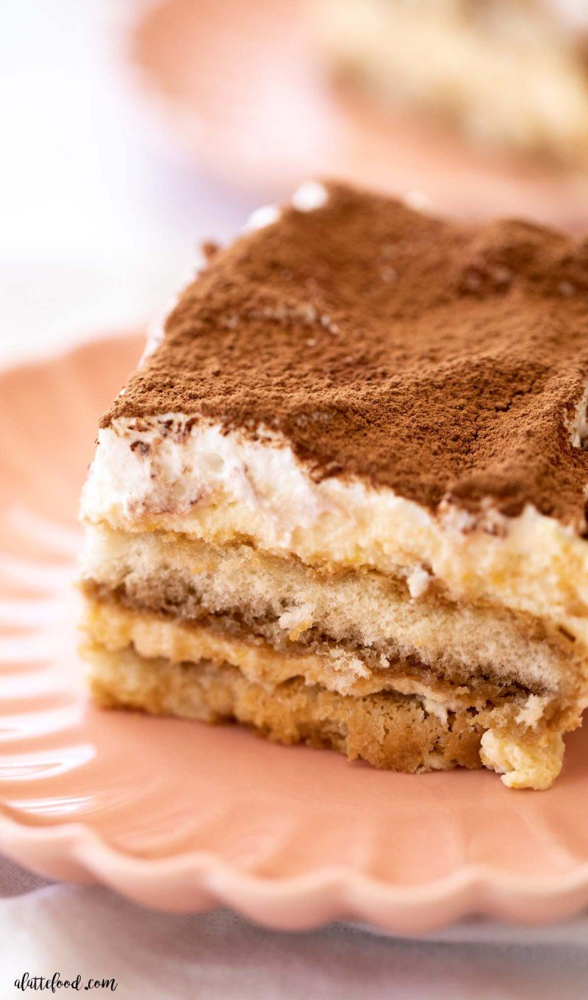
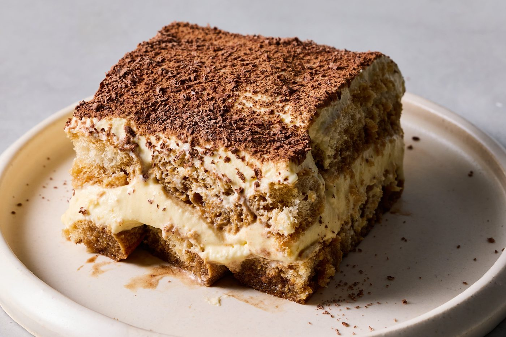
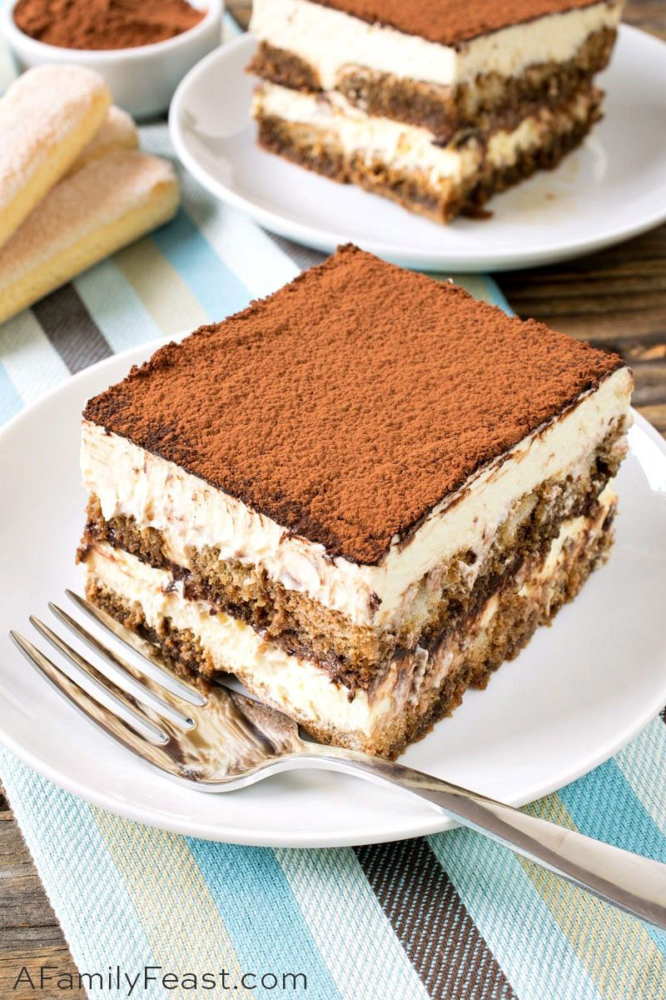
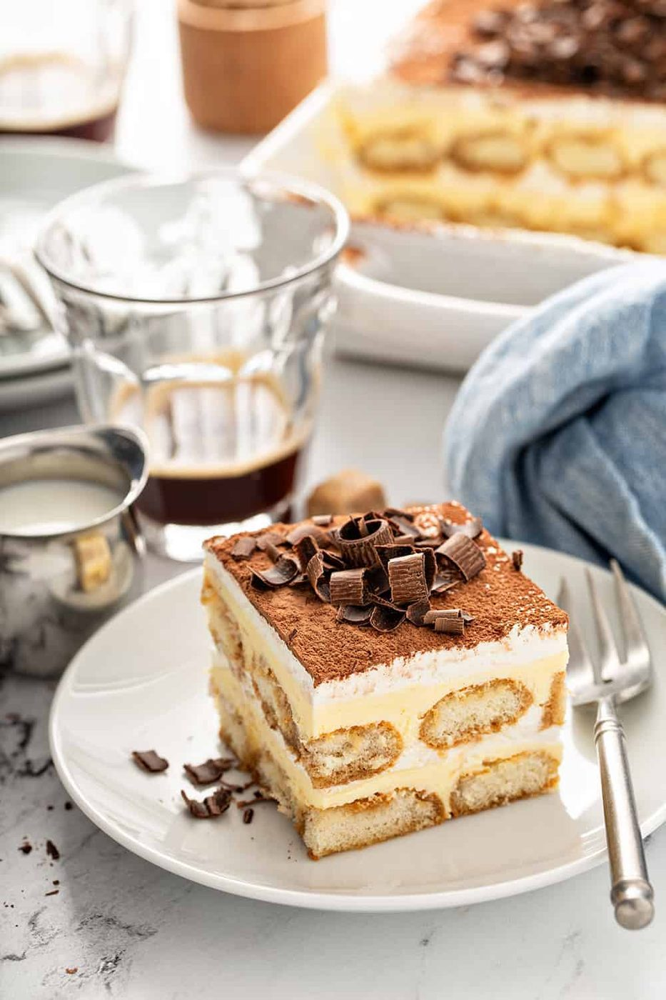
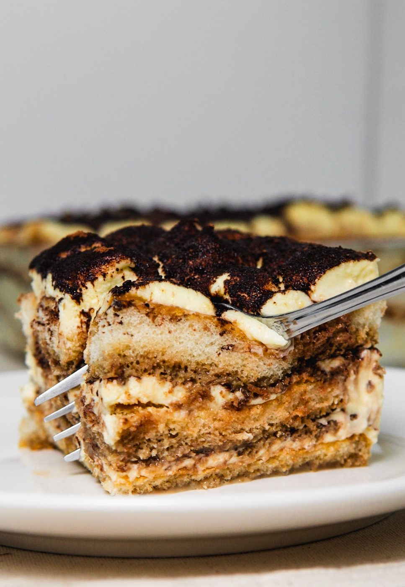

← Sweet & Baked
Classic Tiramisu
No-bake, coffee-soaked, mascarpone-clouded — the Italian dessert that improves while you sleep.
No-bake, coffee-soaked, mascarpone-clouded — the Italian dessert that improves while you sleep.
Tiramisù means 'pick me up', and the name is the recipe: espresso-dipped savoiardi layered with a cloud of mascarpone cream, dusted in cocoa, and then — this is the real step — rested overnight in the fridge. The biscuits hydrate into cake, the cream sets into silk, and the coffee and cocoa merge into something greater than the parts.
The authentic version (Treviso, 1970s, claimed by the restaurant Le Beccherie) uses raw eggs — yolks whipped with sugar until ribboned, folded into mascarpone. The sugar-egg yolk whisking over a water bath to 65°C / 150°F is the version I recommend: it pasteurizes, and it makes the cream glossier and more stable. Espresso must be real espresso-strength coffee, cooled — and the dip is a one-second dip, not a soak. Soaked savoiardi collapse into sludge.
serves 8 — tick items off as you shop; it saves as you go
Whisk yolks, sugar and 2 tbsp water in a bowl over a pot of barely simmering water, 5-8 minutes, until thick, pale and ribboning — and holding 65°C / 150°F for a minute. Off heat, whisk to cool slightly.
Beat the cold mascarpone briefly to loosen, then fold into the yolk base in three additions. Stop the moment it is uniform — mascarpone over-beaten turns grainy and splits.
Mix cooled espresso with liqueur if using. Pour into a shallow dish. Set up your assembly line: coffee, biscuits, cream, dish, cocoa.
Dip each savoiardo in the coffee — count 'one'. Turn, count 'one' again. Lift. They should be barely moistened; they hydrate fully in the fridge. Lay them snugly to cover the dish base.
Half the mascarpone cream over the biscuits, smooth, then a second dipped layer, then the remaining cream, leveled with an offset spatula. Cover and refrigerate at least 6 hours, ideally overnight.
Dust with cocoa through a fine sieve only before serving — cocoa on wet cream turns to paste overnight. Cut with a hot knife for clean edges. Eat cold, with coffee, at any hour; Italians will defend your breakfast tiramisu.







Images are web-sourced via image search and self-hosted. Original sources:
https://z-cdn.chatglm.cn/image-search-mcp/images-ppt/2fc5b3860ae1.jpghttps://z-cdn.chatglm.cn/image-search-mcp/images-ppt/69581bd76b06.webphttps://z-cdn.chatglm.cn/image-search-mcp/images-ppt/72c766e99782.jpghttps://z-cdn.chatglm.cn/image-search-mcp/images-ppt/8146d51229bd.jpghttps://z-cdn.chatglm.cn/image-search-mcp/images-ppt/8e97db062a07.jpghttps://z-cdn.chatglm.cn/image-search-mcp/images-ppt/944d5e104661.jpghttps://z-cdn.chatglm.cn/image-search-mcp/images-ppt/bc8e08b81c68.jpegVerified working videos — click a card to load the embed.


Powered by GitHub Issues — the backup kitchen. One issue per recipe; your comment lands in the repo.